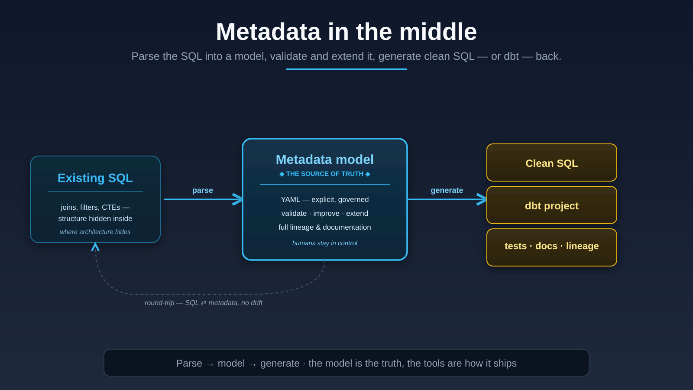

Expertise · SQL parsing & migration
Most SQL migrations are a hopeful rewrite: copy the logic to the new platform, run it, and pray the numbers match. I do it the other way around — parse the existing SQL into metadata, reason about it, and generate clean SQL (or a dbt project) back. The model in the middle is what makes the move provable instead of risky.

The ideas behind it
I don't capture "how the query works" line by line. I capture what it does — pivot, normalize, union, aggregate — as functional metadata blocks. That abstraction is what survives a platform change; the syntax doesn't.
Comparing only the final output tells you that something differs across thousands of rows. Comparing the query step by step — each CTE before and after — tells you which transformation introduced it. Root cause found, not just symptom. Migration debugging, roughly 10× faster.
Once the logic lives as metadata, the new platform's SQL is just one output. The same model can generate a dbt project, tests, lineage and documentation. Tool-agnostic by design — you're never locked to where you landed.
AI accelerates migration only when it has a structured foundation to work against. Parsed metadata gives the model something true to reason over, so it transforms SQL into explainable logic instead of a confident guess.
From the writing
That's exactly the kind of work I take on — prove it identical, step by step, and leave you with the model, not just the new SQL.
Start a conversation